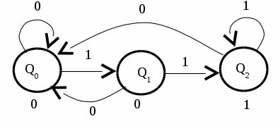
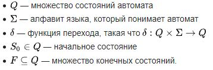
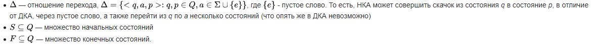
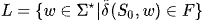

Автомат Мура (абстрактный автомат второго рода) в теории вычислений — конечный автомат, выходное значение сигнала в котором зависит лишь от текущего состояния данного автомата, и не зависит напрямую, в отличие от автомата Мили, от входных значений. Автомат Мура назван в честь описавшего его свойства Эдварда Ф. Мура, опубликовавшего исследования в 1956 году в издании “Gedanken-experiments on Sequential Machines”

Формула:
Терминология:
Символ — любой атомарный блок данных, который может производить эффект на машину. Чаще всего символ — это буква обычного языка, но может быть, к примеру, графическим элементом диаграммы.
Слово — строка символов, создаваемая через конкатенацию (соединение).
Алфавит — конечный набор различных символов (множество символов)
Язык — множество слов, формируемых символами данного алфавита. Может быть конечным или бесконечным.
Автоматы


Автомат читает конечную строку символов a1,a2,…., an , где ai ∈ Σ, которая называется входным словом. Набор всех слов записывается как Σ*.
Слово w ∈ Σ* принимается автоматом, если qn ∈ F.
Говорят, что язык L читается (принимается) автоматом M, если он состоит из слов w на базе алфавита ∑ таких, что если эти слова вводятся в M, по окончании обработки он приходит в одно из принимающих состояний F:

Обычно автомат переходит из состояния в состояние с помощью функции перехода δ , читая при этом один символ из ввода. Есть автоматы, которые могут перейти в новое состояние без чтения символа. Функция перехода без чтения символа называется ∈ -переход (эпсилон-переход).
Формальное определение
Автомат Мура может быть определён как кортеж из 6 элементов, включающий:
множество внутренних состояний S (внутренний алфавит);
начальное состояние s0;
множество входных сигналов X (входной алфавит);
множество выходных сигналов Y (выходной алфавит);
функция переходов Ф : S x X → S.
функция вывода G : S → Y.
Связь с автоматами Мили
Для любого автомата Мура существует эквивалентный ему автомат Мили: любой автомат Мура путём добавления ряда внутренних состояний может быть преобразован в автомат Мили. Обратное, строго говоря, неверно: дело в том, что сигнал на выходе автомата Мура зависит только от входного сигнала в предыдущие моменты времени, а выходной сигнал для автомата Мили может зависеть от входного сигнала и в текущий момент времени. Для автомата Мили можно в общем случае построить лишь автомат Мура, который ему почти эквивалентен: а именно его выход будет сдвинут во времени на 1. Если мы изменим определение автомата Мура, таким образом, что автомат будет выводить значение G(s) в в конце транзакции s → s’ а не в начале, то такие автоматы будут полностью эквивалентны автоматам Мили..